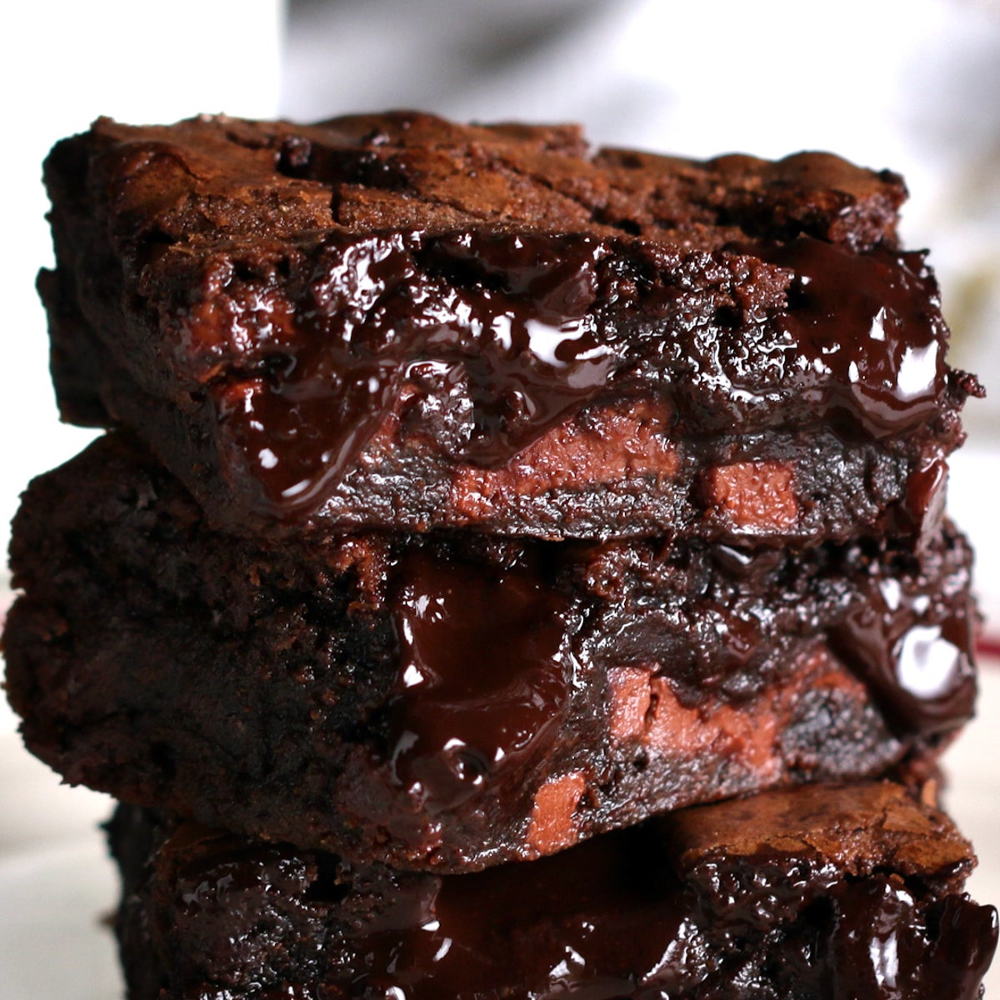

Brownies

Description
My favorite brownie recipe! I have made these dozens of times, and I never change anything - why change a great thing!
This is the recipe for the brownie batter itself, but once you make the batter, you can add chocolate chunks to it, nuts, cookie crumbs, dried fruits, or whatever else you'd like.
Ingredients
- 280g butter
- 230g chocolate
- 100g cocoa powder
- 1 tablespoon espresso powder
- 400g granulated sugar
- 100g brown sugar
- 2 teaspoons vanilla extract
- 2 teaspoons salt
- 6 large eggs
- 130g flour
Steps
- Preheat your oven to 180C. Grease and line your baking pan with baking paper.
- Chop up all the chocolate into a smaller bowl, then add 25g of the cocoa powder, and the espresso powder.
- Melt the butter until it's simmering, then pour it over the chocolate. Let it sit for two minutes, then whisk until the mixture is all melted, has no lumps, and is glossy and shiny.
- In a larger bowl, mix sugar, brown sugar, vanilla, eggs and salt, and beat with an electric mixer for at least ten minutes. Seriously, must beat for at least ten minutes.
- With the mixer still on, pour the melted and cooled chocloate mix into the eggs, and blend until well combined.
- Lastly, add the flour and the rest of the cocoa powder, and gently fold with a spatula until incorporated and has no lumps.
- Pour the batter into the pan and bake for about 20 minutes. After 20 minutes, take the brownies out of the oven, and use the back of a spoon to crack the top crust for that distinct brownie look.
At this point, feel free to add some salt on top of the brownies too, for extra flavor.
- Put the brownies back into the oven and bake for 20 more minutes. Make sure to take them out of the oven while they are still a bit raw in the middle, that way they will be more delicious when completely cooled.
- Enjoy!